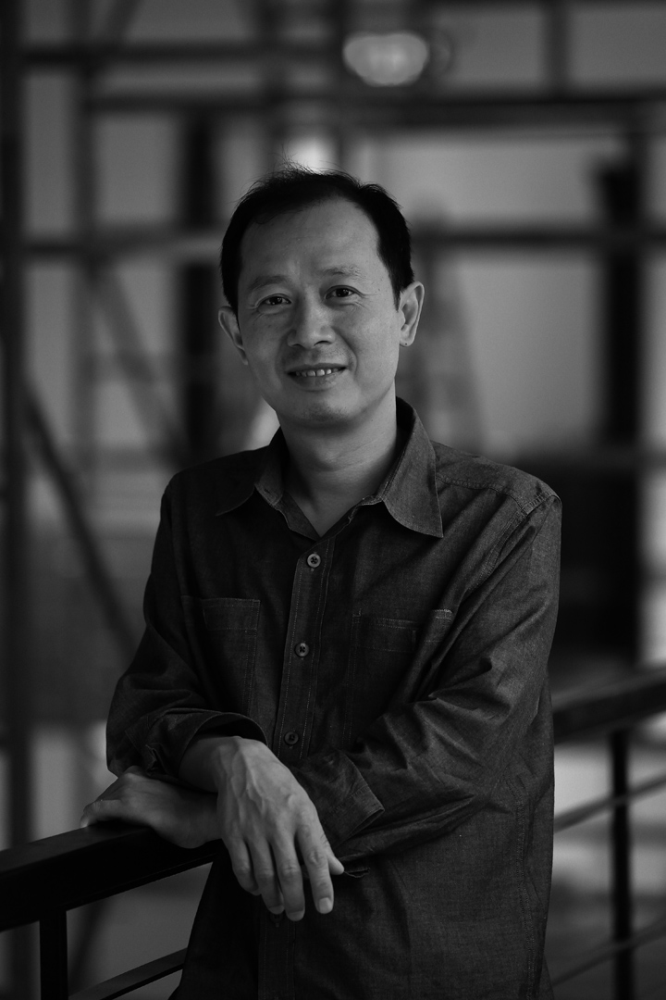

Negotiating the Non-Negotiable: On the Work of Yan Lei
Hou Hanru
As a spearhead of globalization, today’s art is intrinsically related to and even conditioned by the system of power, that is in turn defined by institutional and/or market success. Contemporary art, in the meantime, is increasingly being turned into highbrow entertainment, smoothly integrated into the world of celebrity, the vanity fair. It has gained unprecedented popularity, the subject of urban gossip, covered in all media, while pretending to be creative, innovative – even provocative.
On the other hand, following the logic of economic globalization, the institutional and market system of contemporary art has largely expanded to reach the non-Western world. China, India, Turkey, Russia, and even the Middle East, not to mention Latin America and Africa, are now the new frontiers of the system’s exploration, with new “centers” being established in those areas. Among them, Chinese artists are certainly the most sought-after species, and Yan Lei has been one of the new stars raised from the Chinese soil in the last decade.
Indeed, the question of the relationship between art and power, especially Chinese and Western power, has been a central topic that generations of artists from China have been negotiating in their works and through their social actions and discourse. However, Yan Lei’s generation, emerging in the late 1990s and becoming increasingly successful in recent years, distinguishes itself from an elder generation who claimed their particular “in-between” cultural identity in opposition to the Western-centric values and linguistic hegemony, in the style of much avantgarde revolt and post-colonialist debate. The new generation resorts to new strategies of operating within the dominant “global” system by directly penetrating, embracing, and engaging it with a mixture of cynicism and irony, and without giving up the possibility of being subversive. They are pragmatic and opportunistic. But, at the same time, there is a criticality and rebellion implied in the process, manifesting itself in the continuous redefinition of artistic activities in today’s new context.
The previous generation, growing up in the context of China’s first opening-up period of the 1980s—the 1985 New Wave movement—had a more generic, abstract, and passionate approach. Clearly, they held a confrontational attitude, defying the hegemony of the official ideology and its institutional oppression. Their experiences after 1989—the historic year marked by the China/Avant-Garde exhibition in Beijing, the Tian’anmen event, the fall of the Berlin Wall, and Magiciens de la Terre—often as immigrants in the West, had pushed them more into the position of “post-colonial” beings. They struggled to demonstrate their new identities and expressed the negotiation between “Chineseness” (as a hybrid of memory and imagination) and their roles in Western, post-colonial society. Huang Yong Ping, Chen Zhen, Gu Wenda, Cai Guoqiang, and Xu Bing are all examples. Behind their thoughts and works, there is always a kind of romantic, even utopian will for universality and progress. This has extended their avant-garde spirit in a neo-internationalist context and made them a particularly remarkable force of attack in the making of a new global society based on multicultural visions.
For Yan Lei’s generation, coming up at a time when China has entered physically and directly into the reality of globalization, being “global” is a much more real, physical, and intimate experience. Merged in the new society of consumption and communication, they live global lives in their homeland. It’s an everyday experience. In the art world, the most spectacular sign is the growing power of the “global art market,” and the boom of contemporary art as an entertainment industry. Global art also signifies, along with an increasingly “global” coverage of diverse cultural symbols and expressions, a somehow hegemonic system of discursive, representational, and marketing power. Inevitably, artists living and working in the Chinese context today have to deal much more directly with this “global art world,” especially the kind of neo-exotic reading practiced by the neo-colonial jet-set “visitors” (collectors, dealers, curators and journalists). They adopt a more pragmatic, even business-like, profoundly cynical strategy to negotiate their own survival and interests. Yan Lei’s art, while remaining pungently critical of this power game, clearly demonstrates this new contradiction and the wisdom to navigate it.
To be an artist in this context implies the quasi-inescapable fate of being turned into an object of voyeurism of the dominant “global” power system. “May I See Your Work?” is the first, and perhaps the most obvious, iteration of such a condition. It appeared in the mid-1990s, when international collectors, dealers, and curators began exploring the Chinese contemporary art scene. The artists survived, operating in a certain underground manner. To be exposed to foreigners provided them the means to continue to work and exhibit, even sell. On the other hand, they risk being turned into the prey of the visitors’ voyeuristic hunting. Many artists had to produce expressly for the “international” art world that systematically projects its political and cultural exoticism onto everything non-Western, especially Chinese. So-called “Political Pop” or “Cynical Realism” was the hit. It is in such a moment that Yan Lei began creating modest, quasi-immaterial conceptual work, with a reproduction of a photograph of Walter Zapp along with his collegues. Zapp was a Latvian engineer who invented a spy camera. Rather than an homage to the inventor, Yan Lei’s reference to this story appears more as an ironic reminder of the fate of this invention: it facilitates international espionage and hence power games, in favor of the dominance of super powers. Is art—today in China, and elsewhere outside the power center—falling into the same fatal reality?
In the 1990s, Chinese contemporary art was rapidly involved and absorbed into major international art events such as the Venice Biennale and Art Basel. Obviously, Documenta, with its mythic, overweighed reputation, occupies a central position in many artists’ aspirations for success. It is indeed the most significant symbol of Western hegemony of institutional power, causing the highest expectation and often, frustration among artists. It is no surprise that the topic of Documenta has been haunting Yan Lei’s imagination and critical reaction, pungently and sarcastically interpreted in a series of works spanning over a decade. In 1997, collaborating with Hong Hao, he sent out fake Documenta invitation letters to many artists in China who were exploring any and all opportunities to be invited to the event. This caused a huge scandal and much anger in the Chinese art scene. Five year later, he produced a rather mechanical but ambiguously realistic painting, copying a photo of a group of international curators lead by Documenta curators on a trip to China, echoing the notion of “May I See Your Work?”. Now, in 2008, after participating himself in Documenta 12, Yan Lei has produced a new series of paintings, the Sparkling Series, that comprise his exhibition at the Aspen Art Museum. With a kind of everlasting ambiguity and irony, he retraces his contradictory relationship with Documenta 12 by linking portraits of Hong Hao, Andy Warhol, the current Documenta curators, and himself against backgrounds with the sunny radiation used in the characteristic, god-like, “sparkling” style of Mao’s portraits during Cultural Revolution. Along with the portraits are images of the sites of his voyage from China to Documenta, then to Aspen. The organization of the images reveals a kind of autobiographical confession of his uneasy and paradoxical relation with the event, and hence with the global art world in general. The mixed feelings of excitement and indifference show a fundamentally ambivalent mental state. It is Yan Lei’s personal sentiment. Moreover, it lays bare a common feeling, or a kind of collective unconsciousness, amongst many Chinese and non-Western artists today, facing the inevitable process of integrating into the established “Global Art System” and the impossibility of maintaining alterity and independence. Ultimately, one is condemned to confront the seemingly unsolvable questions of truth, value, and power.
Interestingly, it is exactly this untenable position that forces Yan Lei and his fellow artists to continue to negotiate the non-negotiable, to search the margin inside the center itself, to turn the common ground into underground. Naturally, irony, self-mockery, satire, and revolt are mingled with conformism, even cynicism. This makes his art particularly uncertain, agitating, confusing, and ungraspable. Instead of fearing incomprehension, Yan Lei manages to turn ambiguity and confusion into the very driving force of his artistic imagination and expression, putting forward this condition as a form of radical freedom. He has been inspired by the strategy of the readymade and tries to extend it into the field of power negotiation in the contemporary “Global Art System.” In addition, he regularly steps out into the field of real political and economic terrains. Calling his art U.A.P. (Unlimited Art Project), he picks up traces of his daily experiences as well as found images and magically transforms them. Mystic and attractive, they often leave the spectator in an infinite tension between curiosity and frustration. Andy Warhol’s radical strategy of Pop Art, marked by his factory production process, has clearly influenced Yan Lei’s processing of his own work and his attitude towards art in general. For the last year, Yan Lei’s personal work systematically ends at the stage of conceptualization, or setting up the rules of the game. The actual production and realization of the work—for example, painting and printing—has always been carried out by other people. This choice eventually eliminates the romantic status of the artist’s subjectivity as the main identity of art production and allows the artist to completely embrace the unstoppable flux of real life without having to affirm any assured values or “truth.” It is perhaps this ultimate “self-liberation” that allows him to produce some of most provocative but playful works in today’s Chinese, and even international, art scene. In The Fifth System: Public Art In The Age Of “Post-Planning”—the 5th Shenzhen International Public Art Exhibition (2003–05)—he succeeded in convincing the local authorities to allow him to occupy a piece of land the size of a football stadium in the heart of the most expensive district of the city and fence it off for two years. Indirectly, this caused an immense economic loss while the city had to live with a kind of unknown heartland. In 2006, imitating the format of Art Basel’s Art Unlimited and Art Statements sections, he “curated” an exhibition in Beijing’s trendy 798 district of a made-up artist named Zhang Yue in a fake gallery. This caused much gossip and anger. His project for the 10th Istanbul Biennial (2007) is probably his most radical and effective: instead of producing any actual personal work, he decided to send a gift from Beijing to the city of Istanbul. The “gift” was actually a Beijing-based punk rock band called Brain Failure. Yan Lei used his own money to pay for the trips of the four band members and had them play at the opening events. Their extravagant and radical performance had broken all kinds of cultural taboos and even temporarily rendered diplomatic protocols useless. At the end of the last song, the Chinese ambassador, usually a quite uptight and cautious figure, got so excited he exclaimed to his entourage, “This is what we call Chinese culture today. We should have them perform on the opening of Beijing’s Olympic Games!”
Hou Hanru

Hou Hanru
Director of Exhibitions and Public Programs and Chair of Exhibition and Museum Studies, San Francisco Art Institute. Born in 1963, Guangzhou, China, graduated from Central Academy of Fine Arts, Beijing in 1985 (BA) and 1988 (MA). Living and working in Paris, France, based art critic and curator since 1990, and in San Francisco since 2006. As art and culture critic and curator, he has been focusing the dynamic relationship amongst art, architecture, urbanism and social change in the age of globalisation and new models of space production, social engagement and multicultural negotiation, etc. Collaborating closely with professionals and publics from various domains, his curatorial and writing projects are highly experimental and seek to propose new understandings of the tension and interactions between globality and locality, between history, present and future, in order to envision new conditions for cultural production and redefinition of artistic activities. He received the honours of Chévalier des ordres des arts et des lettres of the French Cultural ministry, 2008.